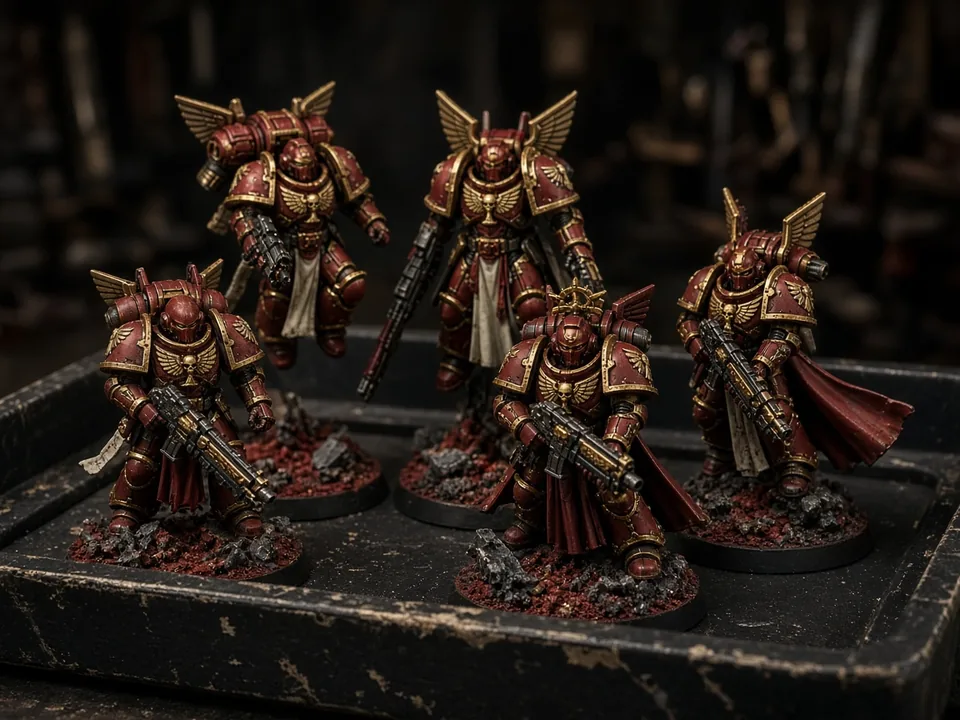
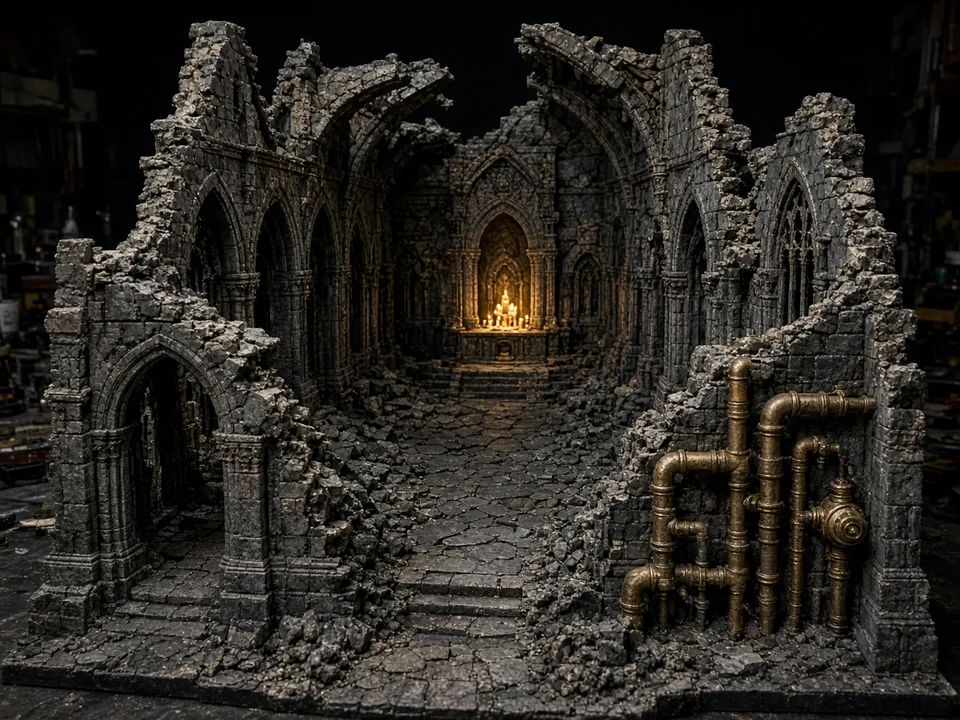
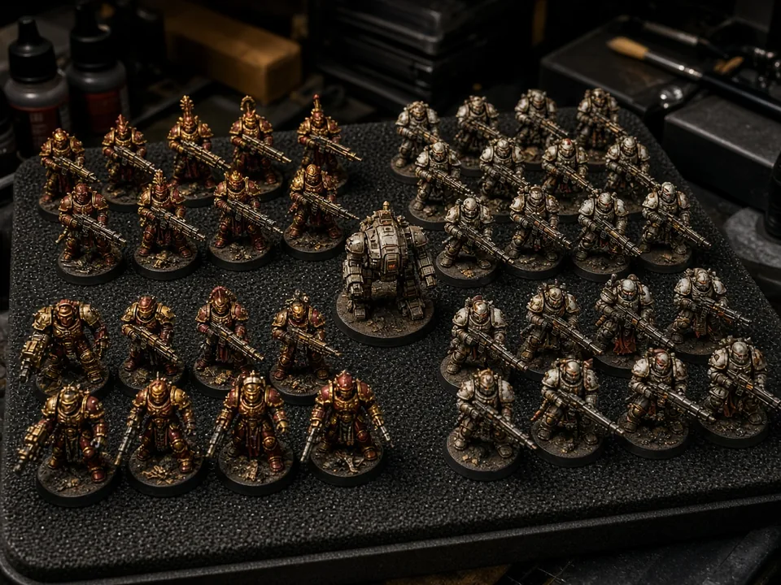
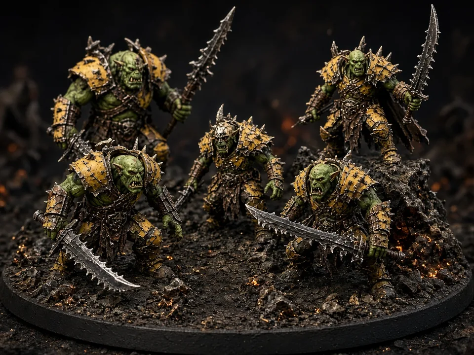
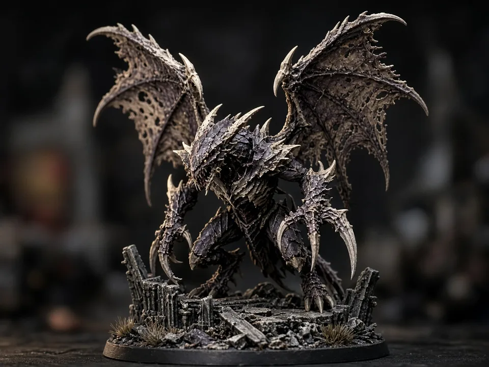

Locked
Locked
Brand
Desk plate
Lintel inside the gate. Love what I do, Love what you do. Not a GW mark.
Open the make files →Paradice Forge Website
Love what I do, Love what you do.
This is the main home. Books I wrote, miniatures I paint, terrain I sculpt, logos and custom work — all the Paradice Forge ideas live here, then walk out to YouTube, the shop, auctions, print-on-demand, and dropship.
Powered by Paradice Miniatures · Paradice = paradise + dice · was Paradise Treasures
 Locked plate · img/logos/plate-lock.png
Locked plate · img/logos/plate-lock.png
Engraved brass gate. Motto under the name. This is the brand on the nav, on merch, and as a printable desk plate. The tab icon stays the geometric gate so it still reads at sixteen pixels.
Locked
Lintel inside the gate. Love what I do, Love what you do. Not a GW mark.
Open the make files → Nav mark
Nav mark
Digital files, grey farm prints, and desk-painted pieces. Checkout stays off. Print the brand plate or the next scatter while the cinematic centerpieces wait on image-to-3D.
Merch master →One house. Many rooms. Live links open when the real shop, auction, or print accounts exist — until then the door still tells you what belongs there.

ChannelParadice Miniatures — builds, paint, and the Armageddon desk. Free to watch.
Watch the channel →
MapsDrag 11th-edition footprints, AoS woods, Heresy walls, and shop extras around a live table.
Open the map picker →
ShopOriginal STLs, painted armies, hero singles, printed terrain — four lanes, not one messy cart.
Browse items →The books and worlds I made as Paradice Forge — Lumora, Weightless Love, and the shelf.
Open the library →
AuctionsOne-of-one painted trays and singles when a listing is live. Paste the store URL when it exists.
Auction link coming
PrintShirts, dice-tray merch, and prints of Forge art — Printful-style, after the brand lock.
Print shop comingGrey terrain from the print farm, plus logo merch. Your files, packed under the Forge name.
Dropship comingPortraits, heraldry, custom logos, kitbash and paint — made at the same desk as the crusade.
Custom work →Soft-launch a few worlds. Then one new story every few months. Nothing is forgotten on the shelf.
See the tree →Stories I wrote — same maker as the miniatures. Soft-launch a door, not the whole shelf at once.
Five jump Intercessors, Captain, and custom Sanguinary Guard packs — Blood Angels Combat Patrol from box to tray. Free on YouTube.
{kind=link}